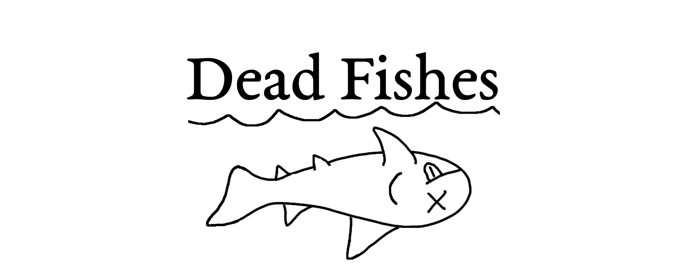

I am Richard Dearden, a palaeobiologist interested in the the early evolution of vertebrates, in particular cartilaginous fishes (sharks, rays, and chimaeras). At the moment I am a Marie Skłodowska-Curie postdoctoral researcher at Naturalis Biodiversity Center, the Dutch national natural history museum in Leiden.
This website has overviews of me and my research, as well as my Dead Fishes blog (below), in which I'll try and post interesting fossil fish stories once monthly. If you would like to get in touch then please do, my contact details are at the bottom of the page.
